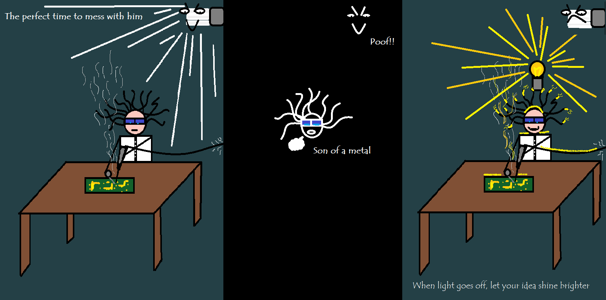
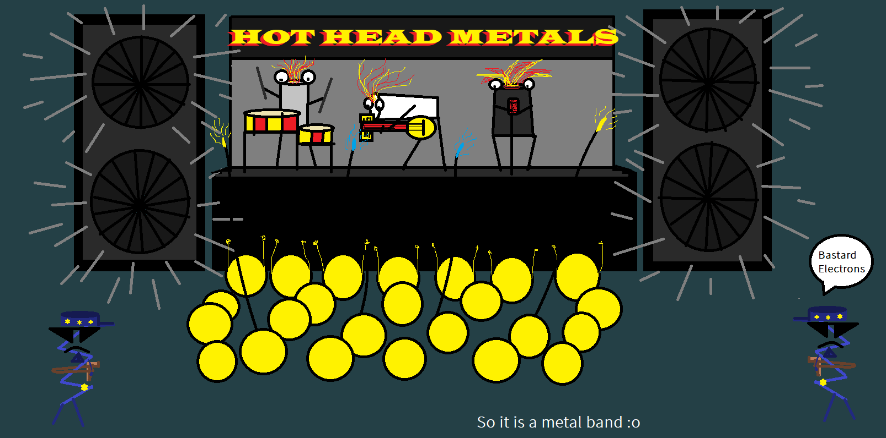
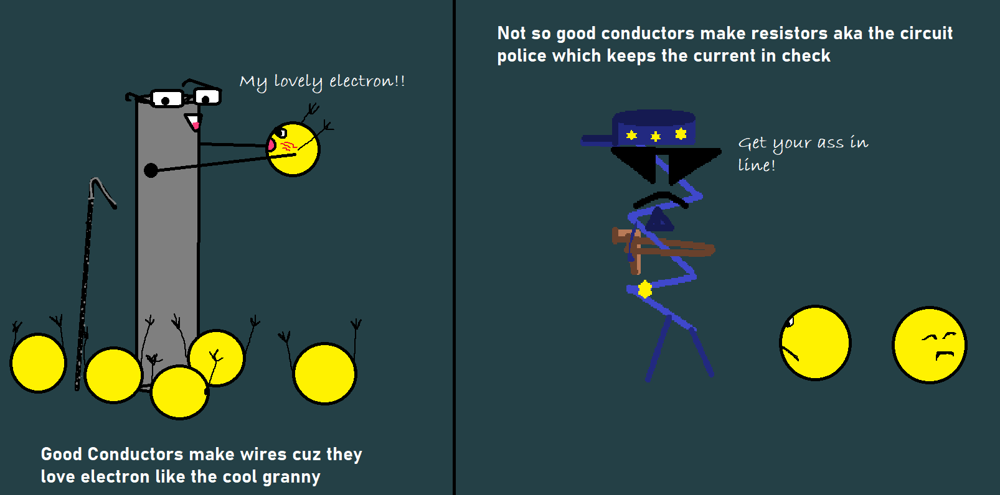
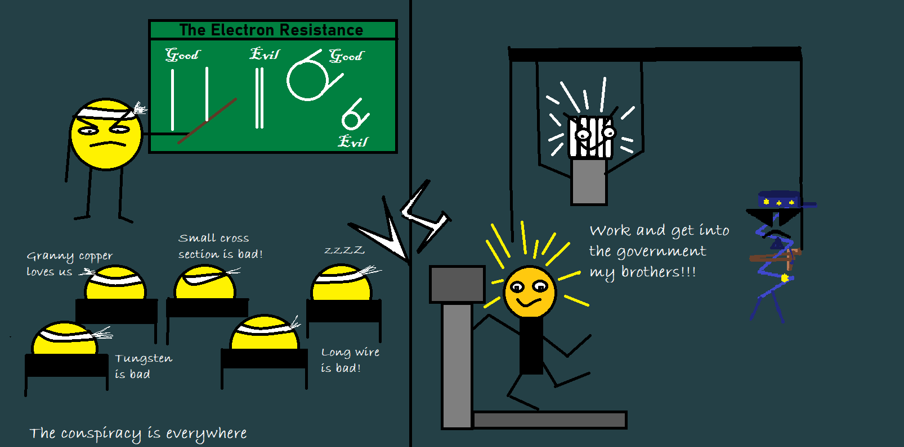
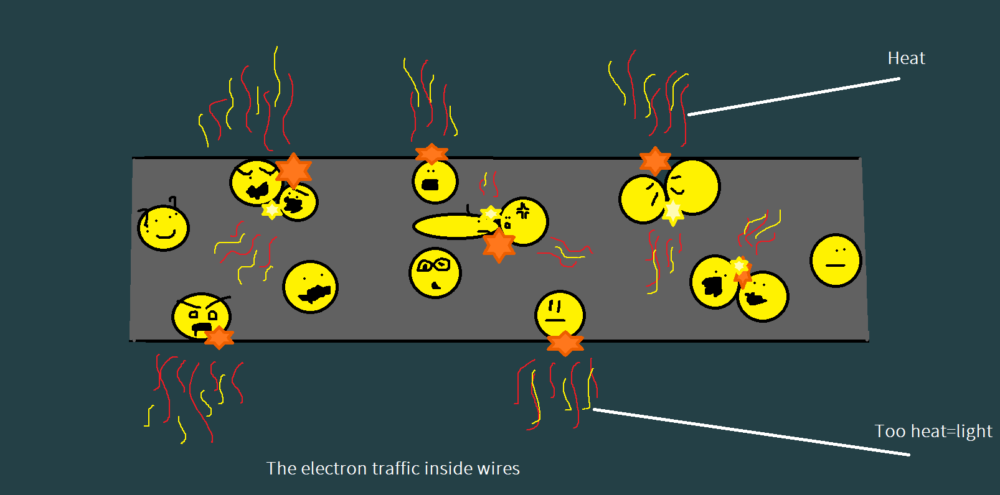
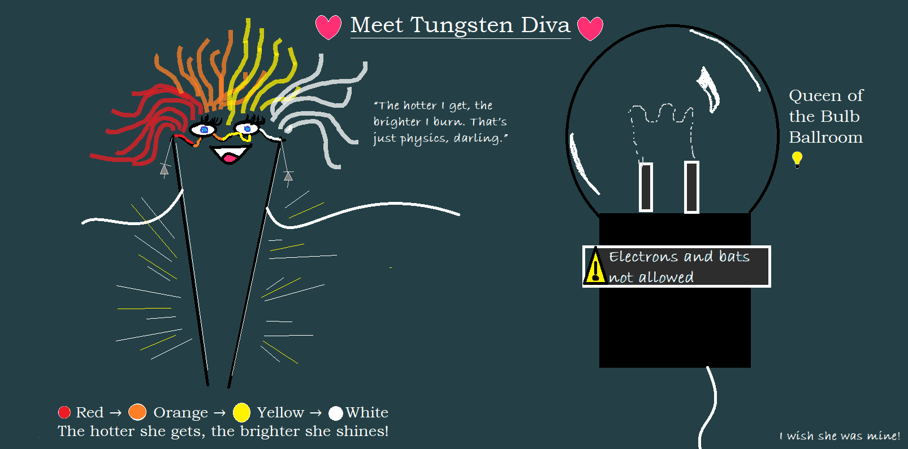

💥*“Bro, not now…”*
I was two seconds away from eternal glory — soldering the final joint on a circuit board that had tested my patience, sanity, and possibly the structural integrity of my desk.
Tip steady.
Hand sweaty.
Smoke rising.
Focus: absolute.
POOF.
The lightbulb died.
“BRO, NOT NOW!!”
I froze. Darkness swallowed the table.
The soldering iron still hissed like a snake in a horror film, glowing faintly red.
I couldn’t even see where the circuit ended and my skin began.
“You really gonna ghost me right now, huh?” I muttered upward, glaring at the lifeless bulb.
“You wait until I'm 0.3 mm from perfection and then you just... ascend?”
Silence.
Though I swear I saw that son of a metal smirk at me.

“I swear if this is some cosmic metaphor about burnout, I’m not in the mood.”
Then—
FZZZAP.
My idea light flickered to life, casting its ugly yellow judgment on my workspace.
“Haha yeah! Go to hell, you bastard of a lightbulb!!” I said, high in vanity—
That’s when I saw it.
My hand.
Soldered.
To the circuit board.
“Oh. Wonderful. We’re married now.”
The PCB didn’t even buy me dinner.
// Relationship Status: It's Complicated.//
🔥 Hot Head Metals
“This ain’t a band name.”
So this fat, glassy boi — found in every house, every street, every room, every shop, every—
One Eternity Later...
—every damn phone. Why does this dude get VIP access everywhere?
“Because they help you to seeeeee!”
That’s Billy.
Billy still claps when the power comes back after a cut.
Oh really? Then why do they go out exactly when you’re trying to solder the last joint or confess your feelings?
And why do they never go off when your crush walks away and you wish the darkness would just swallow you whole? Anyways, it doesn’t matter to my single ass. Sobs
“Bro, I know she rejecte—”
SHUT UP, BILLY.
Where was I? Right — these glassy boomers lit up the world, a whole damn revolution. But then came the Gen Z LEDs:
Slim. Cool. Efficient.
They don’t burn out, they glow up.
They’re emotionally stable. They set boundaries.
They only let current in one direction — respect.

Unlike yellow bulbs.
Those guys are warm and angry. Just like you!
They break under pressure.
Just like you!
And fat.
Just like—
WHAM (Billy's head takes a pan hit. Scene redacted.)
So why are these boomer bulbs still worth ranting about?
Because they’re not just glass and metal. Because inside that glass belly is a hot head metal.
They’re resistance.
They’re heat.
They’re that screaming electron traffic jam inside a tungsten filament that gave us the first practical light.
You ask —
\"Why metal?\"
\"Aren’t metals for wires and conduction?\"
\"Why is the poor resistor held hostage here?\"
\"Why do heat and light act like they’re trauma-bonded?\"—Thanks, Billy. Now go sit in a socket.
Oh boy. Buckle up.
Because what you see as a “bulb”...
...is actually a tortured piece of tungsten doing high-voltage yoga until it glows.
You think light just appears?
Nah. You gotta boil a metal’s soul until it spills out photons.
“But where does this glow come from? For that, we need to understand its root — resistance.”
🧠 Resistor — The Mastermind
“Resistor? What’s a resistor? I know resistance.”
Yeah, and I know cooking — doesn’t mean I’m a cooker, genius.
So listen — wires naturally resist current, but just a lil bit. We pick their material carefully — read my wires rant — because not all metals are created equal, okay?
Now, this world gives every person a purpose regardless of their nature. Woah, didn’t expect that from a rant guy, huh? Let that sink in.
So we have our hierarchy of conductors:
The good boys become wires — they’re the highways for electrons.
The stubborn bois — they got beef with electrons. And guess what? They get drafted into the circuit police.

These are our resistors.
You see those stubby components chilling on your bread—board (yeah I’m hungry). They look like tiny candies. Don’t eat them. They’re angry little tubes with a job.
They’ve got metal inside. But not just any metal — tough, gritty, angry metal. Given specific shape, size, and a deep personal grudge against current.
These guys don’t just conduct — they resist. They regulate the flow. They keep your house from becoming a microwave.
So how do they get recruited into the JREE — Joint Resistor Entrance Exam™? *brib—NO*
🧠 Selection Exam for Resistors (a.k.a JREE™)
So what makes a wire a resistor?
We’re talking recruitment here — not everyone gets to be in the circuit squad.
The exam’s got two big rounds:
Shape
Material
🔹 Round 1: Shape — Two Sub-Questions:
→ Length
The longer the electrons are forced to walk, the more they suffer.
More distance = more collisions = more resistance = more power loss.
Basically, the electrons start filing complaints halfway through.
Like, “Bro I didn’t sign up for a trek.”
→ Area of Cross-Section
Okay, calm down. Don’t giggle.
It’s not that kind of cross-section.
Picture this:
You cut the wire straight across, and you see a circle. That’s the cross-section.
Now imagine 1000 people running at a door:
If the door is wide, they flow through easily.
If the door is narrow, they crash into each other like idiots.
That’s resistance in a nutshell.
🔸 Round 2: Material
Already discussed in that spicy wire rant — if you haven’t read it, go now. Don’t come back till you do. Billy’s watching. Good vs bad conductors. And if you see insulators and billy peeking through the door hoping for a chance — sorry fam, you shall not pass. We're trying to control current, not murder it.
💡Billy’s Facts Corner™ : Good conductors are ideal for wires — low resistance (0 in the ideal world), smooth ride. But real wires still scar electrons a little. Resistors are like regulators. Without them, circuits go full send. Formula: R = ρ × (L / A). Where ρ = material constant, L = length, A = area.
But wait a minute.
Weren’t we talking about lightbulbs?
Then why’s this shady resistor sitting in my rant?
BECAUSE THIS SNEAKY ASS IS BEHIND. IT. ALL.
These resistors trained the lightbulbs. They’re the same blood. This is infiltration. You think lightbulbs just glow? Nah — that’s resistance heat converted into light. Resistors walk so bulbs can shine.
ITs, A CONSPIRACY!! A whole resistance bloodline. So their brothers can rise to power in the Electricity Ministry of Manipulation™.

Remember from my earlier rant👉 — read the THING —👈 how bad conductors cause more collisions, which means more heat? (If you are from the Rant Team—clap your hands, only the OGs get it!)
Well, guess what?
That heat — that glorious byproduct of a chaotic electron rave — isn’t always a bad thing. We just don’t want our wires heating up — but when we want heat?
Heaters.
Toasters.
Lightbulbs.
That’s where resistance becomes art.
And when resistance turns hot enough?
It spills light.
Stay tuned.
Because the hothead herself, Ms. Tungsten, is entering the chat next.
“So buckle up. This ain’t just a rant about bulbs. It’s a twisted love story between heat and light, and the metal that took it personally.”
🏆 Too Hot to Handle: Tungsten’s Glow-Up
“Get off him, you sneaky snake!!” I yelled at the green wire coiling around my neighbour like it was about to strike.
“Iii will nottttt connectttt your circuitttt…” hissed the wire.
“What’s your problem, dumbass? It’s just a lightbulb circuit. What’s the big deal?”
“YOU MADMAN. You’re trying to use me as the lightbulb.”
“Oh, so what? With a few modifications, you’ll glow like a Christmas strip!”
“My ass ain’t made for that, idiot. I’ll melt! Go fetch that Tungsten sitting in there!”
“…She doesn’t like people, to be honest.”
“I CAN HEAR YOU!!”
Boomed a voice from inside the room, right under a bold sign:
║═════════════════════════════════════════════════════ ║ ║“ ⚠️ Electrons and Bats Not Allowed! (Just above the Do Not Disturb sticker.) “║ ║═════════════════════════════════════════════════════ ║
Classic diva.
💡 Enter: Tungsten
The moody, hot-headed, high-maintenance legend of lighting.
No sweet-talk.
No tricks.
No insults like “fatty resistor” work on this one.
💥 So, Why Was the Wire Terrified?
Let’s go back. Resistors — our circuit police — are designed carefully.
They get rated — no not like HotOrNot, but by how much heat they can handle before melting into a puddle of “oops.”
See, when electrons rush through them, they collide and lose energy. That lost energy? → Heat.
Too much current = too much heat = burnt resistor = short circuit = flaming house. Nice. ☠️🔥

So we assign melting-point-based roles:
Low melting point? Low rating. Handle small electron protests.
High melting point? Big guns. Let the chaos flow, still standing.
🌟 So What’s the Deal with the Tungsten Gal?
“I’ve got the highest melting point.” she said, stepping out.
“The f— when did you come out??” I asked, blushing lightly.
“The switch turned me off. Cooling down a bit.”
“Whyyyy doesss he turnnn you ONNN in the first place… you two shoulddd dateee or something…” (hisssssss — the wires, always third-wheeling)
“Don’t worry, I’ll catch that switch MF for you.” (Smiling like an idiot, hoping for attention.)

So, why did we hire her !?
🎤 Tungsten (flicking hair, glowing slightly)
“So as I said…
I’ve got the highest melting point, baby.
You could throw a whole electron protest at me and I’d still stand tall —
Hotter than your future, cooler than your copper wires.”🔥 “These current-clown mofos?
They can’t do sh*t to me.
I’ve been training since Ohm's Law dropped.”
(She hates electrons with passion!)💅 “You said heat?
I eat heat for breakfast.
I can get sizzling up to 3422°C, darling, before I even think about melting.
That’s not a number — that’s a flex.”🌡️ “See, most metals get hot and cry.
But me?
I glow.
I dazzle.
The hotter I get, the brighter I shine.”💋 “Low temp? Just boring heat.
Go higher? Red glow.
Hotter? Brighter.
Then yellow.
Then white light.
Not just warmth — illumination.”🙄 “Most of these low-melt-point boys faint before the glow-up.
But me?
I'm the glow-up.”
⚡ (Switch clicks ON)
“Oh look. My cutie switch is back.
We’re on again. Of course.”
🕶️ (She throws a smoldering glance at the wire.)
“Don’t get jealous, darling.
He turns me on…”
(She will never accept he’s toxic and turns ON every other component.)
“Anyway… let me explain what that glowing mess just tried to say before getting all ‘powered up’.”
🧠 The Real Deal:
When metals heat up, they first give off just heat.
Get hotter, they start glowing red — that’s the start of visible light.
Hotter still? That red becomes brighter, turns orange, then yellow, and eventually?
White. Blinding. Light.
Why?
Because the metal is now emitting visible electromagnetic radiation — aka light — not just heat.
“Most metals would give up way before they reach light-stage hotness…
But her?
Our diva Tungsten?
Hotness is just her middle name.
She glows…
She dazzles…
She—she’s—”
🎒 Billy (from the side, whispering too loudly):
“Bro bro, I know she rejected you, but—”🍳 [PAN SFX]
👊🏼“Sleep, you no-brain head.”
🔚 Anyway. Moving on.
As we should. Sobs
📺 Part 2 Drops Next Week
Well, I know your reel-addicted ass can’t focus longer than this — so we break here. Go touch some grass, maybe lick a resistor.
But don’t sleep on it.
Next week?
We bring the real fire.
You think heat is just \"ouch\"?
You think red glow is just aesthetic?
Wait till you find out why heat feels like heat,
why red comes before blue,
why LEDs don’t sweat —
and why Tungsten walked so lasers could slay.
This wasn’t a rant.
This was forepl—foreshadowing.
See you in the heatwave.
// Billy’s currently studying the electromagnetic spectrum. Please pray for him. //
Welcome to Rant-Electronics.
This is not a tutorial.
This is therapy.